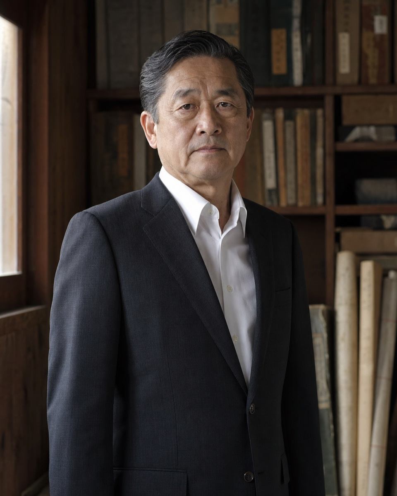

建築請負
住宅、社屋、倉庫、地域施設の設計および施工を承ります。土地の履歴と周辺環境を踏まえ、長く残る建築を旨とします。
我らの未来は過去にあり
GREETING

土地には、そこに生きた者の記憶と、これから生きる者への責任が残ります。
東建設の務めは、ただ建物を造り、土地を動かすことではありません。土地と家を預かり、次代へ渡せる姿に整えることにございます。
土地は売買されるものであると同時に、受け継がれるものでもあります。時代が移ろうとも、守るべき筋まで変えてよい道理はありません。
困っている者には手を差し伸べる。しかし、筋を違える者には厳しく向き合う。それが創業より変わらぬ、東の仕事の仕方です。
我らの未来は過去にあり。
先人が残した境界と約束を軽んじることなく、永海の土地に責任を持つ企業であり続けます。
代表取締役 東 翔琉
OUR WORK
住宅、社屋、倉庫、地域施設の設計および施工を承ります。土地の履歴と周辺環境を踏まえ、長く残る建築を旨とします。
土地、建物、空き家、貸地を継続して管理します。所有者に代わり、保全、利用状況、契約関係を厳正に確認します。
永海市周辺における造成、道路、生活基盤の整備を行います。地域に積み重ねられた合意と秩序を尊重します。
我らの未来は過去にあり
GREETING
土地には、そこに生きた者の記憶と、これから生きる者への責任が残ります。
東建設の務めは、ただ建物を造り、土地を動かすことではありません。土地と家を預かり、次代へ渡せる姿に整えることにございます。
土地は売買されるものであると同時に、受け継がれるものでもあります。時代が移ろうとも、守るべき筋まで変えてよい道理はありません。
困っている者には手を差し伸べる。しかし、筋を違える者には厳しく向き合う。それが創業より変わらぬ、東の仕事の仕方です。
我らの未来は過去にあり。
先人が残した境界と約束を軽んじることなく、永海の土地に責任を持つ企業であり続けます。
代表取締役 東 翔琉
OUR WORK
住宅、社屋、倉庫、地域施設の設計および施工を承ります。土地の履歴と周辺環境を踏まえ、長く残る建築を旨とします。
土地、建物、空き家、貸地を継続して管理します。所有者に代わり、保全、利用状況、契約関係を厳正に確認します。
永海市周辺における造成、道路、生活基盤の整備を行います。地域に積み重ねられた合意と秩序を尊重します。
相続、境界、借地、売買に関する相談を受け付けます。関係者と土地双方の来歴を確認した上で、方策を提示します。
COMPANY
INFORMATION
永海市における地域情報伝達および災害時連携の強化を目的として、ウェストテレビを含む関係事業者との業務協定を再開いたしました。
当社役員の親族に関する一部報道につきまして、事業運営と直接関係のない事項への回答は差し控えます。
東辰也は、去る八月二十二日、逝去いたしました。ここにお知らせ申し上げます。
今後の事業体制を鑑み、次期経営体制および候補者の記載を改めました。詳細につきましては、社内規定に基づき公表を控えます。
東家の後継として事業全般への理解を深めるため、東辰也を地域開発部門へ正式に配属しました。永海市内の土地整備事業における実務を開始します。
HISTORY
東建設 創業明治十八年、永海市東町にて創業。
土地整備事業を開始永海市周辺における土地整備を請け負う。
不動産管理部門を設置土地および家屋の継続管理を事業化。
東辰也 誕生東家次代として社史に記載。
東辰也、地域開発部門へ配属次期代表候補として実務を開始。
役員候補者の記載を一部変更経営体制の再検討に伴い、候補者欄を改訂。
東辰也 逝去
外部企業との協定を再開一部地域事業において連携を再開。